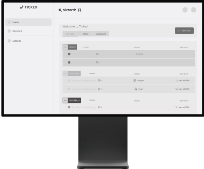
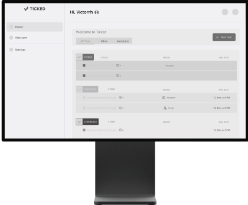
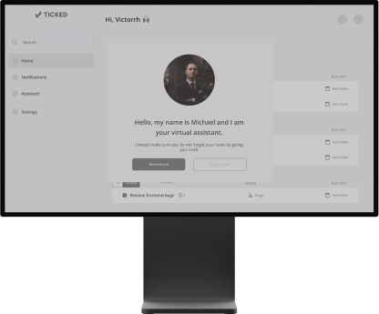
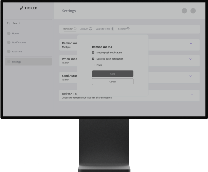
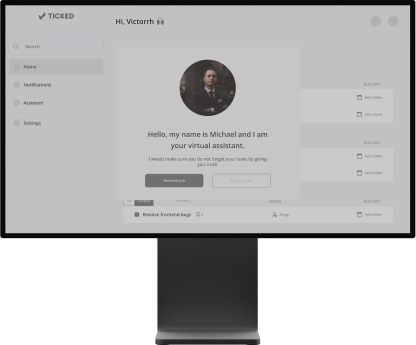
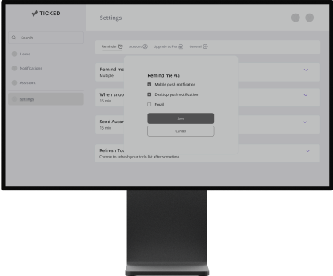
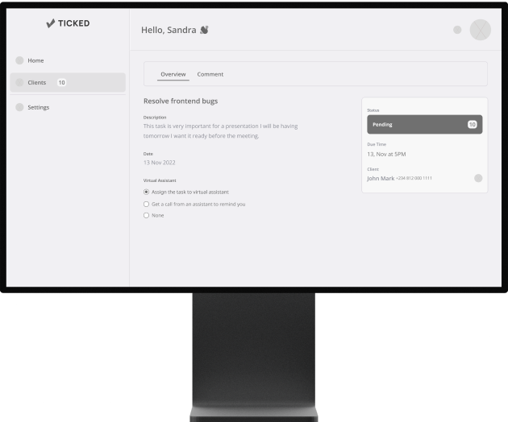
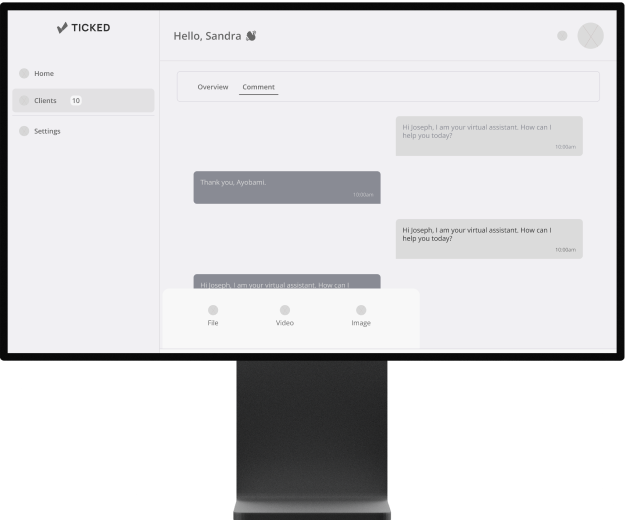
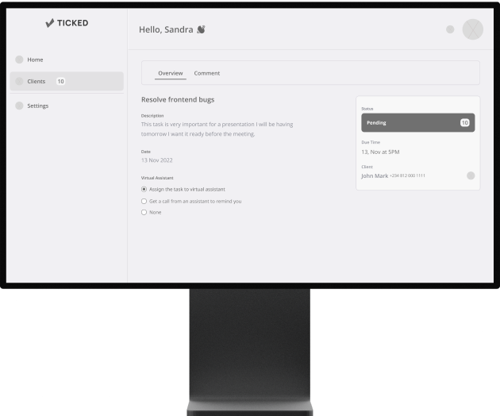
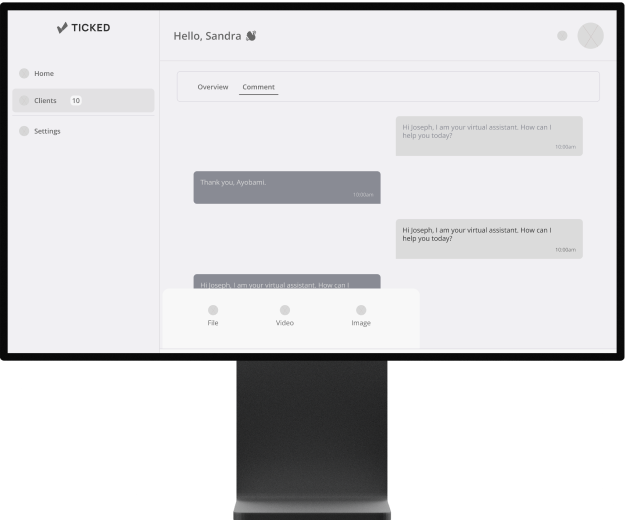

This To-do list app will have users create a task and ensure the task is completed with the help of a Virtual Assistant.
User Research
Visual Design
Miro
Figma
June-August 2022
Thesis@ZuriTraining
At ticked, we aim to create a professional relationship between the user and the Virtual Assistant (VA). The user creates a task and chooses to assign it to the Virtual Assisant who will carry out each of those created tasks.

The Ticked logo is formed by a unique shape with curved edges, which aims to bring a neat design. The warm, orange tone of the logo also makes the logo more approachable and keeps the design simple. The logotype of Ticked gives the user a feeling of "accomplished" when seen.
0.3 RESEARCH
USER INTERVIEWWe conducted 3 interviews with potential users, we asked them questions regarding what they wish to see differently in a To-do list app and how they plan their day. Below are their quotes:
“As a CEO, I get things mixed up sometimes while trying to prioritize my day. I want to be reminded always.”
“I want an app that allows a VA handles all my task for the day.”
“I would like to see an app that offers VA services inclusive of their skills.”
Of course anyone can use the Ticked app. However, we went for specifications due to monitization of the product.

Business Class People who will require the VA services are the entrepreneurs who are always busy with loads of daily schedules and have little or no more to complete their task for the day.
.png)
These are mostly millennials or Gen Z’s who own a thriving business and are sometimes occupied with social activities.
To get a general representation of the website, I have drawn out a user flow. This will help us understand the flows of the website easier.
USER:
 

 



 



 DASHBOARD
DASHBOARD
 CREATE A TASK
CREATE A TASK
 TASK DETAILS
TASK DETAILS
 VA PROMPT
VA PROMPT
 REMINDER OPTIONS
REMINDER OPTIONS
 CHAT WITH VA
CHAT WITH VA
We sketched out wireframes for the project and began our user testings with people outside our team.

 Dashboard
Dashboard
 Create Task
Create Task
.png) VA Prompt
VA Prompt
.png) VA Dashboard
VA Dashboard
 Task Details
Task Details

.png)